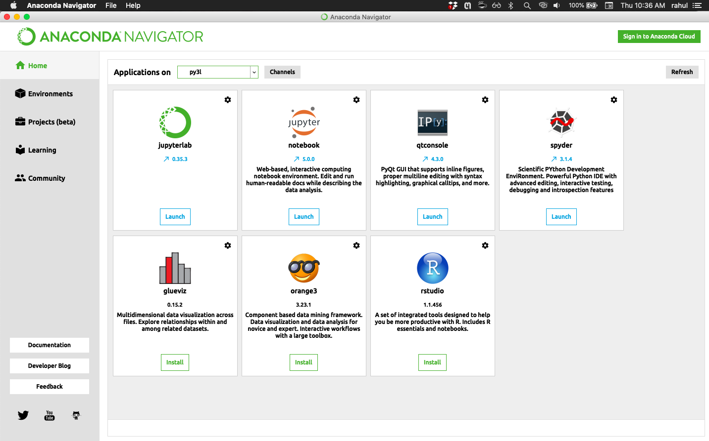
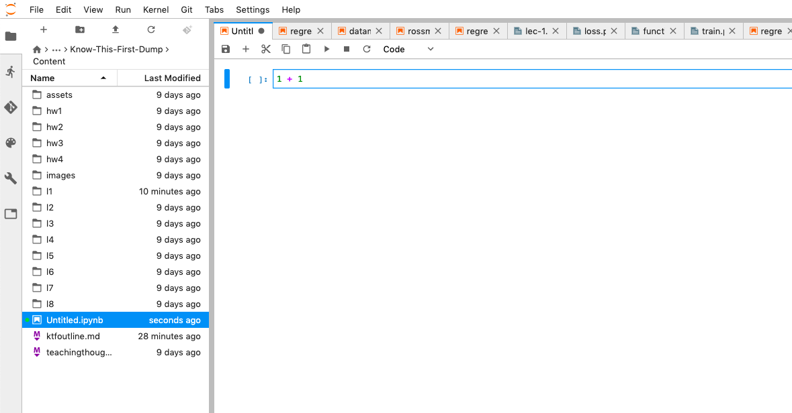

Please try these things out before you come to the first class!
You will need to first install Anaconda Python. The packages are here. You need to install the Python 3.7 version
These short videos from our youtube channel (recorded by Akshaj) walk you through the process of downloading and installing Anaconda.
First download:
Then install:

(1) Bring up the “Anaconda Navigator” from your Start Menu, Panel or text-entry point.
(2) Then click on “Jupyterlab”. This will open up a web browser for you with a screen that looks like the next picture.
This screen is called the Launcher. Click on “Python 3”. This launches a “kernel” or python process, and connects a new document window, called a Jupyter Notebook to this process.

You can now type in text boxes in the Jupyter Notebook, called cells in this new window. The left side is a file manager and is likely showing your home folder. This notebook is called Untitled.ipynb.
Type 1+1 in the text box and hit “Shift-Enter” or mouse-press the “Play icon” on the toolbar at the top.

The answer 2 is printed out.

A new cell appears at the bottom.
By default the cells are in Code mode. These can be changed to Markdown mode in the toolbar to enter text. The next picture shows some buttons and what they do.

Lets shift tack a little bit and play around with Python!
Play around with python in the cells. All the common operators you know and love are available!
Variables are labels for values. And values are things that fit into memory locations, such as the word hello. A variable is a post-it on that pice of memory, a pointer if you like.
Var = "hello"

Python values have types, such as integer, boolean, string, floating-point(real).
Input:
var1 = 7
var2 = 7.01
var3 = "Hello World"
var4 = True
print(type(var1), type(var2))
print(type(var3), type(var4))
Output:
<class 'int'>, <class 'float'>
<class 'str'>, <class 'bool'>
There are comparison operators in python, which can be used for flow of control in the language:
So code with conditionals looks a little bit like this:
var1 = 5
var2 = 10
if var1 == var2: # colon followed by an indented next line
print("The values are equal")
elif (var1 < var2): # conditional can be inside brackets
print("First variable is lesser than the second variable")
else: # when nothing matches, do this. we keep the colon-indent
print("Second variable is lesser than the first variable")
Notice that code which runs when one or another condition is true is idented.
INDENTED?
When i first saw that Python has no braces, but instead uses indentation, I was repulsed and went back to writing perl. But a few months later I tried it again, and I was hooked.
The identation is used in function definition, conditionals, pretty much everywhere you might think it natural, because there is a “mental” scope change.